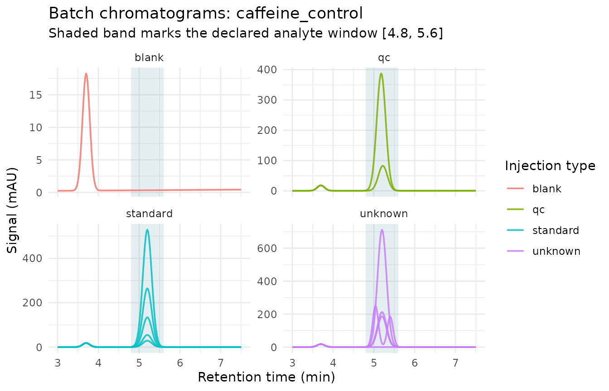
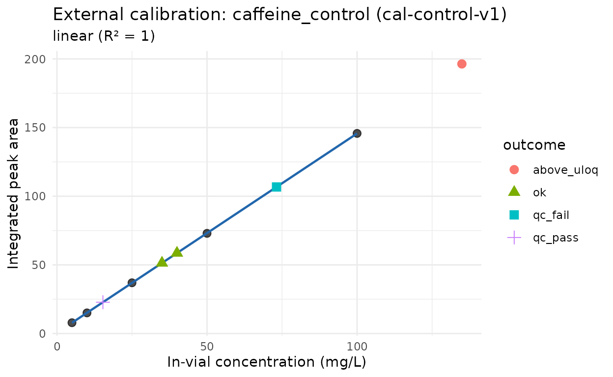

How-to: quantify an externally calibrated scalar chromatography batch
Source:vignettes/articles/howto-lc-batch.Rmd
howto-lc-batch.RmdHow do you carry a batch of scalar detector chromatograms from a raw file to reported concentrations with full provenance, QC verification, and explicit flags for missing, interfered, and out-of-range injections? This guide walks through one 13-injection externally calibrated HPLC-UV numerical control batch included with the package.
Read the batch file and manifest
The control batch (lc_batch_control.csv) contains 13
injections on a single UV 254 nm channel (3.00 to
7.50 min at 0.02 min spacing, 226 points per
injection). Every injection includes a sloping baseline and an unrelated
matrix peak near 3.70 min outside the declared analyte
retention window [4.8, 5.6] min.
read_measure_record_delim() reads the raw CSV bytes
once, records the file’s SHA-256 digest, and retains the exact parsed
row ordinal (.source_rows) for every chromatogram
point.
data_path <- system.file(
"extdata",
"lc_batch_control.csv",
package = "measure",
mustWork = TRUE
)
manifest_path <- system.file(
"extdata",
"lc_batch_manifest.csv",
package = "measure",
mustWork = TRUE
)
columns <- c(
sample_id = "sample_id",
injection_id = "injection_id",
channel_id = "channel_id",
channel_name = "channel_name",
curve_id = "curve_id",
axis_name = "axis_name",
axis_unit = "axis_unit",
value_name = "value_name",
value_unit = "value_unit",
location = "location",
value = "value"
)
record <- read_measure_record_delim(
data_path,
columns = columns,
source_id = "lc-batch-control"
)
expected_sha256 <- "8a9f439a1e4c413d0e6abc138ff8bc26e36282d2210a7f0573c116c3e8769949"
stopifnot(identical(record$sources$source_sha256[[1]], expected_sha256))
manifest <- utils::read.csv(manifest_path, stringsAsFactors = FALSE)
manifest## batch_order injection_id injection_type nominal_conc dilution_factor
## 1 1 INJ-01 blank NA 1
## 2 2 INJ-02 standard 5 1
## 3 3 INJ-03 standard 10 1
## 4 4 INJ-04 standard 25 1
## 5 5 INJ-05 standard 50 1
## 6 6 INJ-06 standard 100 1
## 7 7 INJ-07 qc 15 1
## 8 8 INJ-08 qc 60 1
## 9 9 INJ-09 unknown NA 1
## 10 10 INJ-10 unknown NA 2
## 11 11 INJ-11 unknown NA 1
## 12 12 INJ-12 unknown NA 1
## 13 13 INJ-13 unknown NA 1The manifest declares:
-
Blank (
INJ-01): zero analyte; checked against a blank ceiling of 20% of the fitted LLOQ response. -
Standards (
INJ-02toINJ-06): five calibration levels spanning5to100mg/L (cal-control-v1). -
QC injections (
INJ-07,INJ-08): low QC (15mg/L, passing within ±15%) and high QC (60mg/L, intentionally biased +22% to exercise QC failure). -
Unknowns (
INJ-09toINJ-13): an undiluted in-range sample (~35 mg/L), a 2x diluted sample (~40 mg/L in vial, ~80 mg/L reported), an above-ULOQ sample (~135 mg/L), a missing-peak sample (non-detect), and an interfered sample with two resolved peaks inside[4.8, 5.6]min.
Run peak integration, calibration, and QC
measure_quantify_batch() extracts the curves via
measure_record_curves(), runs
step_measure_peaks_detect() (prominence ≥ 1.0 mAU) and
step_measure_peaks_integrate() (trapezoidal area above a
local linear baseline clamped at zero), fits unweighted linear
regression area ~ nominal_conc via
measure_calibration_fit(), checks in-vial concentrations
against [5, 100] mg/L before applying
dilution_factor, and verifies QC injections via
measure_calibration_verify().
batch <- measure_quantify_batch(
record = record,
manifest = manifest,
window = c(4.8, 5.6),
analyte = "caffeine_control",
conc_unit = "mg/L",
calibration_revision = "cal-control-v1",
min_prominence = 1.0,
integration_method = "trapezoid",
baseline = "local",
model = "linear",
weights = "none",
qc_acceptance_pct = 15,
blank_max_pct_lloq = 20
)
batch## <measure_batch_results>
## Analyte: caffeine_control (channel: uv254)
## Window: [4.8, 5.6]
## Calibration: linear (weights = none, revision = cal-control-v1, R² = 0.999996)
## Range: 5 to 100 mg/L
## Injections: 13 (standards = 5, blanks = 1, qc = 2, unknowns = 5)
## Outcomes: above_uloq=1, blank_ok=1, calibrated=5, interfered_peak=1, missing_peak=1, ok=2, qc_fail=1, qc_pass=1Every row in summary(batch) carries the injection
identity, peak bounds, integrated area, calibration revision, estimated
in-vial concentration, dilution-adjusted reported concentration,
outcome, QC status, and exact CSV source-row bounds for both the
chromatogram and the integrated peak.
res <- summary(batch)
res |>
select(
injection_id,
sample_id,
injection_type,
peak_count,
area,
calibration_revision,
dilution_factor,
estimated_conc,
reported_conc,
outcome,
qc_status,
peak_source_row_start,
peak_source_row_end
)## # A tibble: 13 × 13
## injection_id sample_id injection_type peak_count area calibration_revision
## <chr> <chr> <chr> <int> <dbl> <chr>
## 1 INJ-01 BLK-01 blank 0 NA cal-control-v1
## 2 INJ-02 STD-05 standard 1 7.88 cal-control-v1
## 3 INJ-03 STD-10 standard 1 15.0 cal-control-v1
## 4 INJ-04 STD-25 standard 1 37.0 cal-control-v1
## 5 INJ-05 STD-50 standard 1 73.0 cal-control-v1
## 6 INJ-06 STD-100 standard 1 146. cal-control-v1
## 7 INJ-07 QC-LOW qc 1 22.8 cal-control-v1
## 8 INJ-08 QC-HIGH qc 1 107. cal-control-v1
## 9 INJ-09 UNK-01 unknown 1 51.3 cal-control-v1
## 10 INJ-10 UNK-02 unknown 1 58.6 cal-control-v1
## 11 INJ-11 UNK-03 unknown 1 196. cal-control-v1
## 12 INJ-12 UNK-04 unknown 0 NA cal-control-v1
## 13 INJ-13 UNK-05 unknown 2 NA cal-control-v1
## # ℹ 7 more variables: dilution_factor <dbl>, estimated_conc <dbl>,
## # reported_conc <dbl>, outcome <chr>, qc_status <chr>,
## # peak_source_row_start <int>, peak_source_row_end <int>Notice how failure modes stay explicit rather than collapsing into valid zeros or silently extrapolated values:
-
INJ-08(QC-HIGH) fails QC (outcome = "qc_fail",qc_status = "fail"), andbatch$verificationreportsoverall_pass = FALSE. -
INJ-11(UNK-03) retains its raw in-vial estimate (134.91mg/L) for diagnostics while leavingreported_conc = NAwithoutcome = "above_uloq". -
INJ-12(UNK-04) reportsoutcome = "missing_peak"witharea = NAandreported_conc = NA. -
INJ-13(UNK-05) detects two peaks inside[4.8, 5.6]min and reportsoutcome = "interfered_peak"rather than silently selecting one.
Inspect chromatograms and calibration
autoplot(batch, type = "chromatograms")
autoplot(batch, type = "calibration")
Compare with an independent calculation
Before running the comparison, we declare tolerances of
1e-9 mAU·min for peak areas and calibration parameters,
1e-9 mg/L for estimated and reported concentrations, and
exact agreement on file SHA-256, peak counts, outcomes, QC flags, and
peak source-row spans.
An independent standard-library Python script reads
lc_batch_control.csv and lc_batch_manifest.csv
directly from raw bytes and reproduces every quantity. Independent
Python reference
tol <- 1e-9
coefs <- stats::coef(batch$calibration$model)
stopifnot(
abs(unname(coefs[[1]]) - 0.5686644570673636) < tol,
abs(unname(coefs[[2]]) - 1.4511419544975344) < tol,
abs(res$area[[2]] - 7.878024541962506) < tol,
abs(res$reported_conc[[9]] - 34.99324700912393) < tol,
abs(res$reported_conc[[10]] - 79.97846280752921) < tol,
is.na(res$reported_conc[[11]]),
identical(res$outcome[[11]], "above_uloq"),
identical(res$outcome[[12]], "missing_peak"),
identical(res$outcome[[13]], "interfered_peak")
)Export a standalone report
measure_batch_results implements
measure_report_sections(), so
render_measure_report() packages the method provenance,
quantitation table, calibration plot, and chromatograms directly:
render_measure_report(
batch,
"lc-batch-control-report.html",
title = "External Calibration Batch Control (cal-control-v1)",
open = FALSE
)Limitations and package boundary
-
Constructed control fixture:
lc_batch_control.csvis an explicitly constructed Gaussian-plus-baseline numerical control. It qualifies the end-to-end record, integration, calibration, dilution, and flagging arithmetic, while measured-method qualification on real instrument data stays open in issue #84. -
Core vs. optional
measure.lcpack: Coremeasurealready provides the scalar relational record (measure_record,read_measure_record_delim,measure_record_curves), peak detection/integration, calibration fitting and verification, single-analyte batch quantitation (measure_quantify_batch), and report export. Technique-specific capabilities—multi-analyte target libraries, internal-standard response-factor matrices, vendor chromatogram format adapters, DAD spectral deconvolution, and USP/EP chromatographic system-suitability conventions—belong in an optionalmeasure.lctechnique pack rather than core.